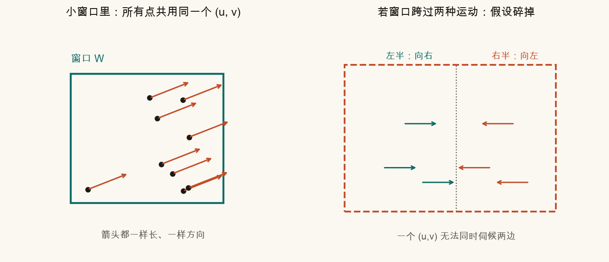
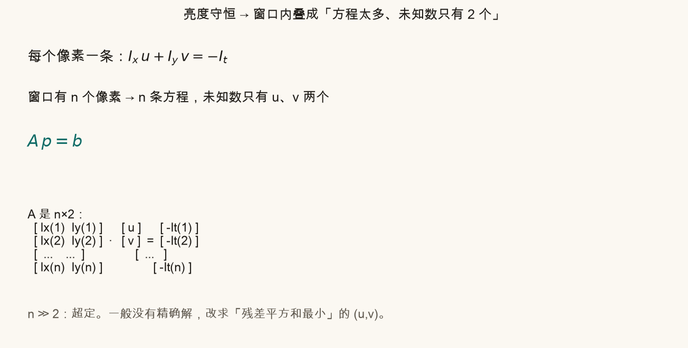
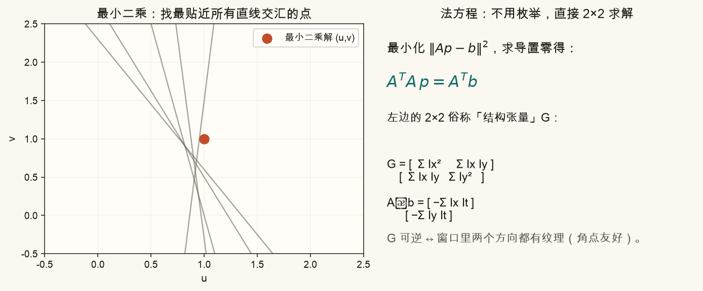
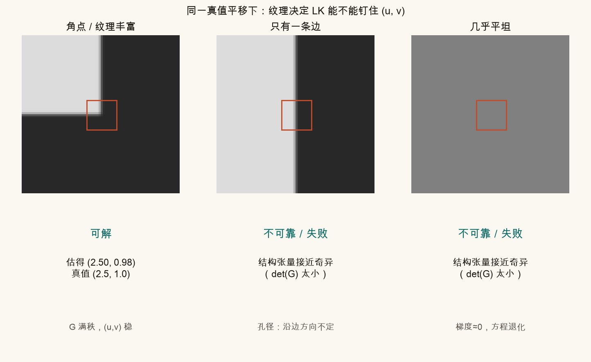
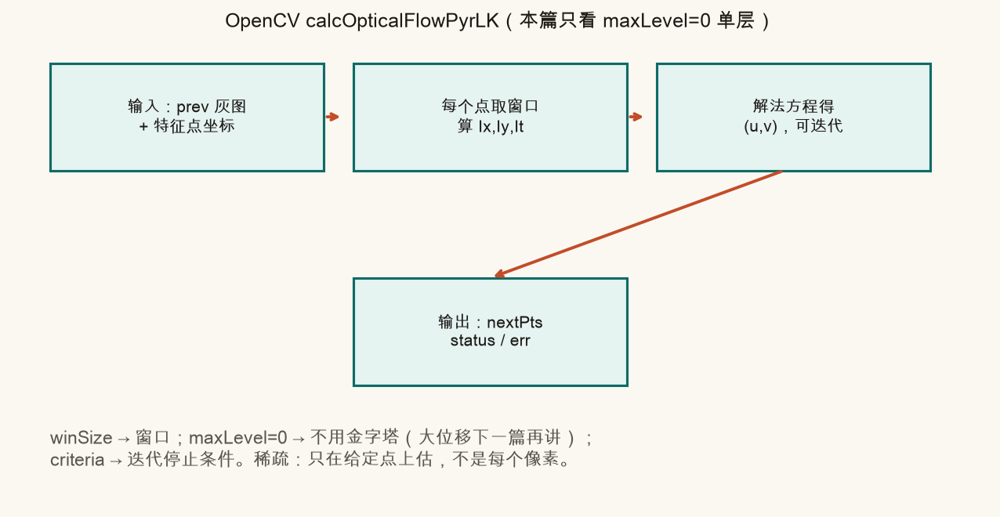
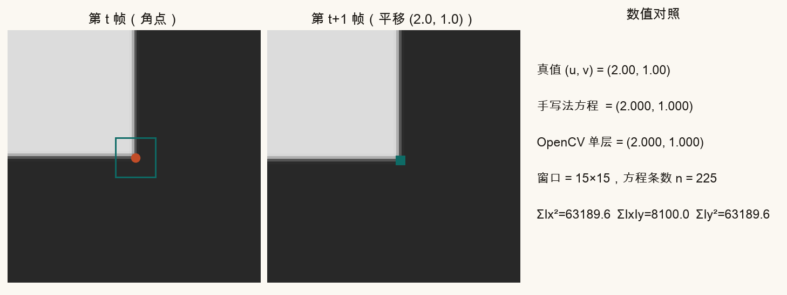
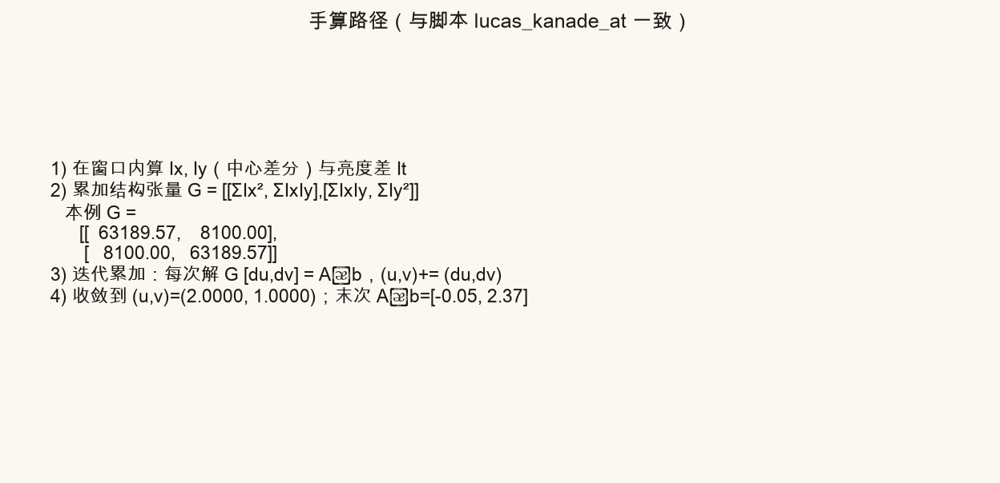
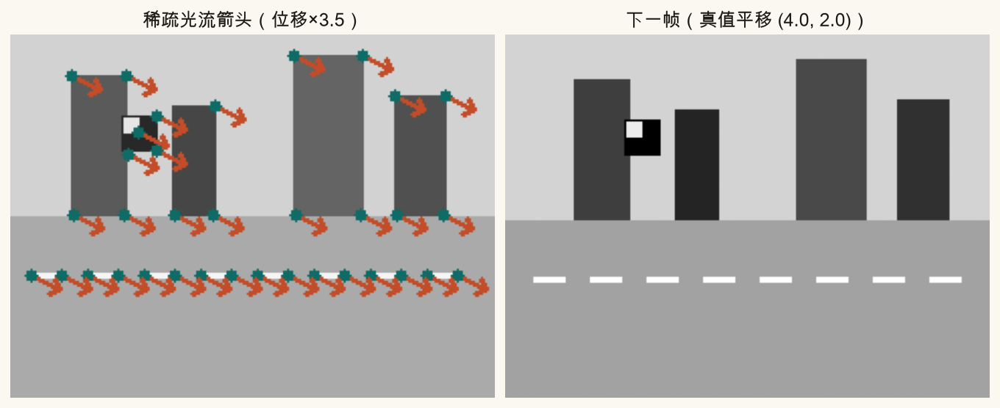
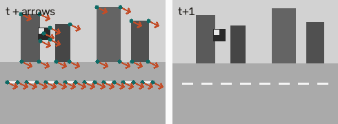

第 15 篇 · 光流重点 · 约 60 分钟
第 14 篇钉牢了「亮度守恒」和「一个像素定不了两个未知数」。这一篇给出最常用的补丁：在特征点附近开一个小窗口，假设窗口里大家共用同一个平移 (u, v)，把许多条弱约束叠成超定方程，用最小二乘（法方程）一次解出。读完应能看懂 OpenCV calcOpticalFlowPyrLK 在「单层」时在干什么，并能用合成平移图对照数值、画出稀疏箭头。
光流要回答的是：图像上某个位置，在下一帧「挪到了哪里」。若每个像素都估一个 (u, v)，叫稠密光流（第 17 篇）。若只在事先挑好的点——通常是角点、特征点——上估，叫稀疏光流。
防抖、跟踪、估帧间变换，往往不需要整幅稠密场，只要几十到几百个靠谱点就够。Lucas-Kanade（简称 LK）正是稀疏路线里的经典积木。
名字里的 Lucas 与 Kanade 是两位作者。工程口语里「跑一下 LK」常常直接指 OpenCV 的 calcOpticalFlowPyrLK；本篇先讲单层、无金字塔的核心，金字塔留给第 16 篇。
第 14 篇的亮度守恒，在一个像素上只给出：
Ix · u + Iy · v = −It
一个方程、两个未知数——解不唯一，这就是孔径问题的代数面目。
Lucas-Kanade 的关键补丁只有一句：
在特征点周围开一个小窗口（比如 15×15），假设窗口里所有像素共享同一个平移 (u, v)。
生活类比：你盯着一张贴纸上的一小块。贴纸整体在桌上滑，短时间内这块里的墨点几乎「齐步走」——同一方向、同一距离。于是每个像素仍贡献一条「Ix u + Iy v = −It」，但未知数还是只有那一对 (u, v)。方程多了，未知数没变。

窗口太小：方程少、噪声大。窗口太大：更容易混进不同运动（物体边界、深度跳变）。后面交互里可以拧窗口边长，看结构张量与估计怎样变。
把窗口里第 k 个像素写成一行：
Ix(k) u + Iy(k) v = −It(k)
n 个像素 → n 行。矩阵写法：
A p = b
其中 p = (u, v)T 是 2×1；A 是 n×2，每一行是 (Ix, Iy)；b 是 n×1，每一行是 −It。

符号从哪来（拆碎版）：
泰勒展开只在位移很小时准。位移到几个像素时，工程上会迭代：估一小步 → 按当前 (u,v) 到第二帧取样再比 → 再估修正量并累加。OpenCV 的 PyrLK 即便 maxLevel=0 也会做这类迭代。脚本里的 lucas_kanade_at 同样迭代了若干次。
超定系统一般求：让残差平方和最小的 p。
最小化 ‖A p − b‖²
白话：每条方程是 (u,v) 平面上的一条直线（约束）。噪声下这些直线不会交于一点。最小二乘找一个点，让它到所有约束的「违背程度」的平方和最小——像在一束差不齐的线中间找最公道的交点。
对 p 求导并令其为零，得到法方程：
AT A · p = AT b
左边的 2×2 矩阵常写作 G，叫结构张量（或图像的二阶矩矩阵）：
G = [ Σ Ix² Σ Ix Iy ]
[ Σ Ix Iy Σ Iy² ]
右边是：
AT b = (−Σ Ix It， −Σ Iy It)T
于是只需求解一个 2×2 线性系统：G p = AT b。不必真的组出巨大的 A。

G 什么时候可逆？两个特征值都明显大于 0 —— 窗口里水平与竖直方向都有灰度变化。角点、碎纹理满足；一条直边（只有法向梯度）、大片平坦则 G 接近奇异，(u,v) 不定或乱飘。这和第 14 篇孔径问题、第 5 篇「角点好跟踪」是同一件事的不同说法。
LK 不是万能胶。假设与现实对不上时，数值仍可能给出一个 (u,v)，但那是「错得一本正经」。
| 假设 | 大致成立时 | 容易碎掉时 |
|---|---|---|
| 亮度守恒 | 光照稳定、曝光一致 | 闪烁、自动曝光猛跳、阴影扫过 |
| 窗口同一平移 | 小窗口、刚体/远景小平移 | 窗口跨物体边界、旋转/缩放明显、大视差 |
| 一阶泰勒够用 | 位移约 ≤ 1–2 像素（或靠迭代） | 大位移且不迭代 / 无金字塔 |
| G 可逆 | 角点、双向纹理 | 平坦、一条边（孔径） |

实战里还会碎在：遮挡（点在下一帧被挡住）、运动模糊、重复纹理（跟错邻居）。第 16 篇的前后向检验、第 18 篇的失败模式会再展开。
OpenCV 调用长这样：
nextPts, status, err = cv2.calcOpticalFlowPyrLK(
prevImg, nextImg, prevPts, None,
winSize=(21, 21),
maxLevel=0, # 0 = 不用图像金字塔，本篇焦点
criteria=(cv2.TERM_CRITERIA_EPS | cv2.TERM_CRITERIA_COUNT, 30, 0.01),
)
和手写 LK 的对应关系：手写组 G 与 ATb 并迭代；OpenCV 在 C++ 里做同一件事，还带亚像素插值与若干数值稳定技巧。合成小位移时，二者应落在同一量级——下一节用图对照。
下面用浏览器里的玩具数据模拟「角点小块 + 已知平移」。拖动窗口半径，看：方程条数、结构张量对角元、以及估出的 (u,v) 怎样变。右侧可切换「只有竖直边」看孔径：一个方向的 Σ 变很小，估计发飘。
脚本造一块「左上亮、其余暗」的角点，整图平移真值 (2, 1)，再分别：
lucas_kanade_at（中心差分梯度 + 法方程 + 迭代）求解；calcOpticalFlowPyrLK(..., maxLevel=0) 求解；

若你改「改这里」里的 MY_TRUE_SHIFT 或 MY_WIN_SIZE，会重画 ch15_my_synth.png。位移过大且仍单层时，误差会爬升——这正是第 16 篇要解决的问题。
在合成「小街景」上：goodFeaturesToTrack 选角点 → 单层 PyrLK 跟踪 → 把位移放大若干倍画箭头（否则箭头太短看不清）。


source .venv/bin/activate
MPLCONFIGDIR=/tmp/mpl-cache python code/ch15_lucas_kanade.py终端应打印「自检通过」，并写出：
assets/figures/ch15_window_assumption.png、ch15_equation_stack.png、ch15_normal_eq.pngch15_when_breaks.png、ch15_opencv_flow.png、ch15_synth_compare.png、ch15_hand_steps.png、ch15_arrows.pngassets/images/ch15_arrows_opencv.pngch15_my_synth.png、ch15_my_arrows.png（及对应 opencv 图）打开 code/ch15_lucas_kanade.py 顶部：
MY_TRUE_SHIFT = (3.0, -1.5) 改成 (1.0, 0.5)，运行后看 ch15_my_synth.png：手写与 OpenCV 应更贴真值。(8.0, 4.0)（仍单层）。误差通常变大——感受「大位移需要金字塔」。MY_WIN_SIZE = 15 改成 7 与 31，对比 ch15_my_arrows.png：窗口过小箭头更抖，过大在边界附近更易糊成「平均运动」。MY_ARROW_SCALE 改成 8，箭头更夸张，仅影响可视化。先自己答，再展开。
在特征点周围的小窗口内，所有像素共享同一个平移 (u, v)。
每个像素一条方程，未知数只有 u、v 两个；像素数 n 通常远大于 2，方程比未知数多。
它是最小化 ‖Ap−b‖² 后对 p 求导置零得到的必要条件。左边 2×2 的 AᵀA 就是结构张量 G，把大系统收成一次 2×2 求解。
角点两方向梯度都强，G 满秩、条件好。(u,v) 可唯一钉住。一条边只有法向信息，切向自由——孔径问题，G 接近奇异。
calcOpticalFlowPyrLK 里 maxLevel=0 表示什么？大位移时缺什么？表示不建图像金字塔，只在原分辨率上做（可迭代）。大位移时一阶近似与搜索范围都吃力，需要第 16 篇的金字塔由粗到细。
不是。更大更稳、抗噪，但更容易盖住不同运动，违背「同一平移」；也更钝。要在噪声与运动一致性之间折中。
单层 LK 怕大位移。下一篇引入图像金字塔：先在模糊小图上迈大步，再逐层精炼；并串成视频里的点跟踪与前后向检验。